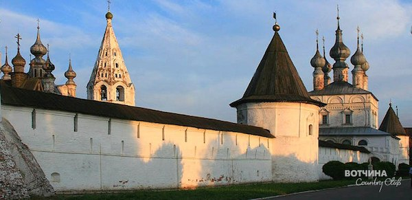

Друзья, наш партнер Юрьев-Польский отдел развития туризма приглашает всех на праздник "День Егорьевой росы"!
Милости просим в Юрьев-Польской!
Приглашаем на праздник пастухов, земледельцев, воинов.
Пастуший рожок да сладкий пирожок,
Игры, песни, пляски -
Побываете вы в сказке!
Программа праздника:
12.00 - Заезд
12.00 - 12.30 - Анимационная встреча группы «Для дорогого гостя и ворота настежь». (У крепостных валов).
Каждую группу туристов встречают главные герои: два пастуха Матвей и Еремей. Фольклорный ансамбль «Канареечка» исполняет для гостей славильную песню. Они рассказывают гостям о предстоящей борьбе за право вместе с хозяином весенней влаги Егорием отомкнуть росу золотым ключом и выпустить её на землю. Матвей и Еремей одаривают туристов пастушьими сумками и маленькими колокольчиками – символом праздника и просят всех позвонить в них и сыграть на музыкально – шумовых инструментах (ложках, бубнах, свистульках, дудочках, рожках, трещотках), выбирая их из плетёных корзин, тем самым «скликнуть» Егория «Егорий зовёт - бегите невеститься!» (Сквер у памятника).
12.30 – 13.00 - Матвей и Еремей рассказывают туристам о том, что Егория почитают на Руси как покровителя невест и предлагают посмотреть старинный русский свадебный обряд, поучаствовать в конкурсе «Заплети косы невесты», пройти хороводом через «кольца любви», сыграть в свадебную игру на «поцелуевом мосту», попробовать усидеть на «лавке примирения».
Далее Хозяйка зазывает туристов прогуляться по раздольной, хлебосольной Егорьевской ярмарке. Гости праздника смогут принять участие в дегустации традиционных Юрьевских медовых напитков, отведать хмельной «Спотыкач», рябиновые и вишнёвые наливочки, попробовать праздничную выпечку, картошечку с домашними разносолами, чай с травами из самовара с крендельком. Вместе с Хозяйкой гости проходят к памятнику основателя города Юрию Долгорукому, где экскурсовод в интересной, познавательной форме раскрывает связь между городом Юрьев-Польским, Юрием Долгоруким, Святым Георгием Победоносцем и Егорием. Туристам предлагается пройти по улице города, где проходили съёмки фильма «Золотой телёнок», он рассказывает о взаимосвязи названия фильма с Егорием Вешним - покровителем домашнего скота.
13.00 – 14.30 - Основная часть. Театрализованное представление «День Егорьевой росы».
Старец-гусляр рассказывает легенду о подвигах Георгия Победоносца. Далее следует театрализованное интерактивное представление, главной интригой которого является прибытие Егория Вешнего на коне. Восседая на высоком троне, он будет лицезреть, как гости праздник проводят да в играх, хороводах, забавах его славят. Матвей и Еремей проводят пастушьи конкурсы: кто сильнее свиснет, кто лучше сыграет на рожке, свистульке, дудочке простейшую мелодию, кто пронесёт вёдра с водой на коромысле, не расплескав её, кто быстрее выпьет крынку молока или простокваши традиционные народные игры.
Егорий, удивлённый умением и сноровкой приезжих гостей, не решается выбрать победителя, вместе с гостями "отмыкает землю", "выпускает на белый свет росу ". Он рассказывает, как проходили на Руси «Лошадушкины именины», приглашает всех желающих поучаствовать в них (украшение лошади лентами, окрапление её росой, закармливание).
Далее Егорий даёт наказ своим помощникам, пастухам да хозяйке накормить гостей вкусно и сытно. Прощаясь со всеми, он уезжает.
Стоимость программы - 450 руб с чел.
14.30 — 15.30 - Концептуальный обед «Что есть в печи - всё на стол мечи».
Удивительная возможность отведать традиционные блюда Юрьев-Польской земли, простую, но сытную пищу:
- закуска «Икра из свёклы»;
- похлёбка «По-егорьевски»;
- жаркое «Крестьянское» с грибами в горшочках;
- кисель овсяный;
- горбушка хлеба домашнего;
- коврижка с ягодным вареньем.
Обед – В кафе города от 250 руб. с чел.
16.30 – 17.00 - Посещение Юрьев-Польского историко-архитектурного и художественного музея и Георгиевского собора.
( Входная плата по билетам музея).
17.00 - Отъезд.
Общее пребывание в городе — 6 часов.
Заказать программу тура можно по телефонам:
моб. тел. 89157541304 – Людмила Посадская.

Error: Undefined variable: category_text File: /var/www/votchina.su/data/www/votchina.ru/templates/template-news.php (65)